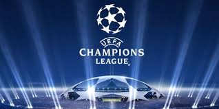

Temukan informasi seputar liga Champion disini.

Liga Champions UEFA (bahasa Inggris: UEFA Champions League) adalah sebuah kompetisi sepak bola antarklub di benua
Eropa yang diselenggarakan setiap tahun oleh Uni Sepak Bola Eropa (Union of European Football Associations, UEFA) dan
diikuti oleh klub divisi tertinggi Eropa. Kompetisi ini merupakan salah satu turnamen paling bergengsi di dunia dan
kompetisi antarklub paling bergengsi di sepak bola Eropa, yang hanya diikuti oleh juara liga nasional (dan juga juara
kedua untuk beberapa negara) dari setiap asosiasi nasional anggota UEFA. Final Liga Champions UEFA adalah acara yang
paling banyak ditonton di seluruh dunia setiap tahunnya. Final musim 2012–13 merupakan yang paling banyak ditonton,
dengan jumlah mencapai 360 juta penonton televisi.[1] Sejak tahun 2015, Final Liga Champions UEFA digelar pada hari
Sabtu minggu pertama bulan Juni pada tahun ganjil dan Sabtu minggu terakhir bulan Mei pada tahun genap.
Diperkenalkan sejak 1992, kompetisi ini menggantikan Piala Champions Eropa atau disebut sebagai Piala Eropa, yang
telah bergulir sejak 1955, dengan menambahkan babak penyisihan grup ke dalam kompetisi dan memungkinkan masuknya
beberapa klub dari beberapa negara tertentu.[2]